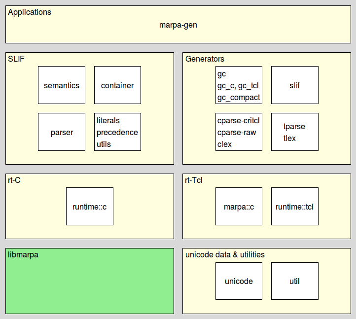

marpatcl_introduction - Marpa/Tcl - Introduction to Marpa/Tcl
Welcome to Marpa/Tcl, a Tcl binding to the "libmarpa" parsing engine.
The system can be split into roughly six sections, as seen in the figure below. The seventh is libmarpa itself, which is technically outside of the system.

The sections in more detail are:
At the top the marpa-gen application, integrating and using all of the packages, providing a parser generator reading grammars specified using SLIF and producing a variety of formats.
A series of packages supporting the SLIF language for grammar specifications. This is a very close sibling to the SLIF language for Marpa::R2, the current stable perl binding.
The section contains packages for parsing SLIF, semantics for translating a parse into a container, processing of literals, and a container for SLIF grammars.
A series of packages for producing a variety of formats from a SLIF grammar container.
The package runtime::tcl implementing a parse engine in Tcl, on top of libmarpa, through the marpa wrapper packages.
The package runtime::c implementing a parse engine in C, on top of libmarpa, with no wrappers needed.
The unicode accessor package (named character classes, case folding, de- and encoding codepoints to various representations, character class operations).
Jeffrey Kegler's base library implementing an Earley parser with fixes by John Aycock, Nigel Horspool and Joop Leo. The foundation for the rest of the system.
The package dependencies are shown in the next image.
aycock, character classes, document processing, earley, horspool, joop leo, lexing, libmarpa, nigel horspool, parsing, regex, table parsing
Copyright © 2015-2018 Andreas Kupries
Copyright © 2018 Documentation, Andreas Kupries